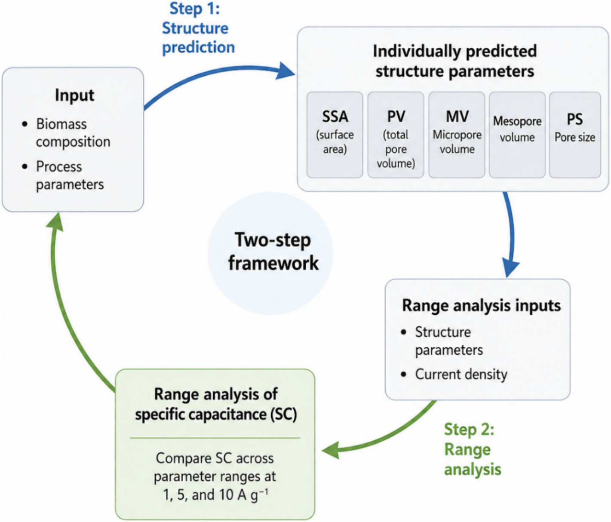

New publication · Journal of Energy Storage
Congratulations to Chigozie on his new publication
Our PhD researcher is first author of “Two-stage interpretable framework for sustainable hydrochar-derived carbon electrodes in supercapacitors”.
The study uses interpretable machine learning to connect biomass composition and processing conditions with carbon pore structure, then examines links to capacitance. It offers directions for experimental investigation while identifying limits to generalisation across studies.
Published online 22 November 2026 · Journal of Energy Storage, volume 184 (2027), article 125887
